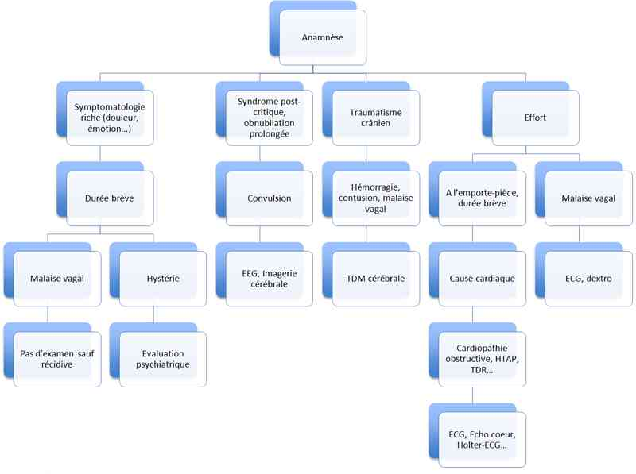

Bienvenue Sur Medical Education
Perte de connaissance brève de l'enfant de plus de 2 ans
EnfantSpécialité : neurologie / pédiatrie /
Points importants
-
Les pertes de connaissance brèves sont un motif fréquent de consultation ou d’hospitalisation en pédiatrie. Ces situations sont perçues par l’entourage comme une « sensation de danger imminent »
-
La gravité potentielle de certaines de leurs causes exige un diagnostic précis
-
La prise en charge d'un enfant ou d’un adolescent victime d’une perte de connaissance brève commence par une bonne connaissance des différentes étiologies possibles
-
Il s’agit le plus souvent d’un diagnostic d’anamnèse, puisqu’il est rare que le clinicien assiste à la perte de connaissance
Présentation clinique / CIMU
SIGNES FONCTIONNELS
Présentation clinique / CIMU
SIGNES FONCTIONNELS
Généraux
- Rupture complète ou incomplète de contact avec l’environnement de durée brève (quelques secondes) ou plus longue (quelques minutes)
-
On différencie :
- la syncope, qui est une perte de connaissance brutale (sans prodrome) complète, très brève, avec perte de tonus de posture, à récupération spontanée et complète
- la lipothymie, perte de connaissance incomplète et progressive
Spécifiques
- L’enfant est le plus souvent vu après le malaise et est asymptomatique lors de la prise en charge médicale
-
Les signes associés, s’ils existent, doivent être détaillés par l’entourage témoin de la perte de connaissance :
- modification du teint (pâleur, rougeur, cyanose)
- mobilité spontanée, existence de mouvements anormaux
- réponse à la stimulation,
- révulsion oculaire
- anomalies respiratoires…
CONTEXTE
Terrain
- Enfant sain ou sur terrain particulier
Antécédents - Facteurs de risque
-
L’interrogatoire doit rechercher un terrain sous-jacent :
- cardiopathie (sténose aortique, cardiomyopathie obstructive..)
- épilepsie
- surdité(syndrome de Jervell et Lange-Nielsen, associé à un QT long)
- ATCD psychiatrique (hystérie…)
- diabète
Circonstances de survenue
Il faut rechercher :
- des facteurs favorisants ou déclenchants (effort, douleur, émotion, orthostatisme, pleurs…)
- des prodromes (céphalées, vomissements, sensations vertigineuses, sueurs, palpitations, impression de malaise, boule pharyngée, précordialgies...)
- la position de l’enfant lors de la perte de connaissance
- des modifications du teint
- l’existence d’une morsure de langue, perte d’urines, ou une respiration stertoreuse au décours
- la survenue d’un traumatisme crânien
- la prise de toxiques
EXAMEN CLINIQUE
Il doit être complet, rigoureux, mais doit s’attacher particulièrement à rechercher :
- des signes de gravité immédiate
- un souffle systolique d’éjection, une tachycardie, une bradycardie, un galop
- un déficit neurologique post-critique, un syndrome confusionnel
EXAMENS PARACLINIQUES SIMPLES
- FR, SpO2, FC, PA, Température, hémoglobine capillaire, glycémie capillaire
-
ECG, seul examen nécessaire dans tous les cas, indispensable devant toute syncope d’allure « primitive » à la recherche de :
- signes d’hypertrophie ventriculaire gauche
- troubles de repolarisation
- bradycardie par BAV tachycardie paroxystique
- QT long
- syndrome de Wolff Parkinson White…
CIMU
- Tri 1 à 3 selon la sévérité du tableau
Signes paracliniques
BIOLOGIQUES
-
En fonction du contexte :
-
NFS-Plaquettes
-
ionogramme sanguin
-
glycémie
-
calcémie
-
gazométrie artérielle
-
HbCO
-
dosage de toxiques
IMAGERIE
- NFS-Plaquettes
- ionogramme sanguin
- glycémie
- calcémie
- gazométrie artérielle
- HbCO
- dosage de toxiques
Radiographie de thorax
- Recherche de signes d’inhalation
- Mesure de l’index cardio-thoracique
EEG
- Un EEG normal n’élimine en rien un diagnostic d’épilepsie qui est avant tout clinique
TDM cérébrale
- En cas de traumatisme crânien (voir protocole TC chez l’enfant) ou de signes neurologiques focaux
Echographie cardiaque, holter ECGsi anomalies à l’examen clinique après avis cardiologique
Diagnostic étiologique
-
Les syncopes ou lipothymies ont pour mécanisme une anoxie cérébrale aiguë par chute du débit sanguin cérébral, d’origine souvent vasovagale ou réflexe. On retrouve souvent des facteurs déclenchants (douleur, émotion, orthostatisme, effort)
-
Les syncopes d’effort susceptibles d’avoir une origine cardiaque doivent être explorées et se manifestent par :
-
une perte de connaissance brutale sans prodrome
-
une durée brève
-
une reprise rapide à un état de conscience normal
-
Origine neurologique :
-
chute brutale traumatisante
-
mouvements anormaux
-
respiration stertoreuse
-
phase post-critique de sommeil, sont en faveur d’une épilepsie
-
Origine hypoxique :
-
spasme du sanglot
-
coqueluche
-
laryngospasme
-
viroses respiratoires sévères
-
En cas de traumatisme crânien :
-
hématome cérébral
-
contusion cérébrale
-
il peut s’agir aussi d’une lipothymie ou syncope émotive ou douloureuse
-
En cas de prodromes évocateurs riches, de malaise devant témoin avec chute freinée (non traumatisante) :
-
Hystérie
-
spasmophilie
-
Penser également :
-
à une anémie sévère
-
à une déshydratation
-
à une hypoglycémie chez un patient diabétique
-
aux intoxications (monoxyde de carbone…)
-
au syndrome du bébé secoué…
Diagnostic différentiel
-
Coma : perte prolongée de la conscience et de la vigilance
Traitement
TRAITEMENT PREHOSPITALIER / INTRAHOSPITALIER
- une perte de connaissance brutale sans prodrome
- une durée brève
- une reprise rapide à un état de conscience normal
- chute brutale traumatisante
- mouvements anormaux
- respiration stertoreuse
- phase post-critique de sommeil, sont en faveur d’une épilepsie
- spasme du sanglot
- coqueluche
- laryngospasme
- viroses respiratoires sévères
- hématome cérébral
- contusion cérébrale
- il peut s’agir aussi d’une lipothymie ou syncope émotive ou douloureuse
- Hystérie
- spasmophilie
- à une anémie sévère
- à une déshydratation
- à une hypoglycémie chez un patient diabétique
- aux intoxications (monoxyde de carbone…)
- au syndrome du bébé secoué…
Diagnostic différentiel
- Coma : perte prolongée de la conscience et de la vigilance
Traitement
TRAITEMENT PREHOSPITALIER / INTRAHOSPITALIER
Stabilisation initiale
- Le traitement est essentiellement symptomatique, et par définition, comme il s’agit d’une PC brève, celle-ci est rarement vue par l’équipe médicale
Suivi du traitement
- Les PC brèves suivant immédiatement un TC sont d’évolution simple dans la majorité des cas (voir protocole TC chez l’enfant).
- Les syncopes d’effort doivent faire penser à une origine cardiaque et faire réaliser des explorations cardiovasculaires (Monitorage ECG, Holter-ECG à l’effort, échographie cardiaque). La négativité de ces examens doit conduire à une surveillance rigoureuse
- La plupart des lipothymies et des syncopes sont bénignes (d’origine vagale). La famille et l’enfant doivent être prévenus du risque de récidives
- Une première crise convulsive sera prise en charge en fonction du type (voir protocole convulsions chez l’enfant)
- Les manifestations hystériques de l’enfant doivent faire l’objet d’une évaluation pédopsychiatrique
MEDICAMENTS
- Ils varient en fonction de l’étiologie (anticonvulsivants, antiarythmiques…)
Surveillance
CLINIQUE - PARACLINIQUE
-
Elle dépend de l’étiologie. Par exemple :
-
en cas de TC : surveillance du score de Glasgow, examen neurologique, céphalées, mouvements anormaux, vomissements… (voir protocole TC chez l’enfant)
-
en cas de malaise vagal : aucune surveillance particulière à distance du malaise
Devenir / orientation
CRITERES D’ADMISSION
-
En cas de défaillance d’organe non contrôlée, transfert en réanimation pour prise en charge spécifique et surveillance rapprochée
CRITERES DE SORTIE
-
L’examen de l’enfant doit être normal et le diagnostic étiologique clair
ORDONNANCE DE SORTIE
-
Elle varie en fonction de l’étiologie (anticonvulsivants, antiarythmiques…)
RECOMMANDATIONS DE SORTIE
-
Les parents doivent être avertis du risque de récidive et de la conduite à tenir en fonction de l’étiologie
Mécanisme / description
-
Le mécanisme dépend de l’étiologie du malaise
-
Se référer aux protocoles spécifiques
Algorithme
-
Algorithme PC
- en cas de TC : surveillance du score de Glasgow, examen neurologique, céphalées, mouvements anormaux, vomissements… (voir protocole TC chez l’enfant)
- en cas de malaise vagal : aucune surveillance particulière à distance du malaise
Devenir / orientation
CRITERES D’ADMISSION
- En cas de défaillance d’organe non contrôlée, transfert en réanimation pour prise en charge spécifique et surveillance rapprochée
CRITERES DE SORTIE
- L’examen de l’enfant doit être normal et le diagnostic étiologique clair
ORDONNANCE DE SORTIE
- Elle varie en fonction de l’étiologie (anticonvulsivants, antiarythmiques…)
RECOMMANDATIONS DE SORTIE
- Les parents doivent être avertis du risque de récidive et de la conduite à tenir en fonction de l’étiologie
Mécanisme / description
-
Le mécanisme dépend de l’étiologie du malaise
-
Se référer aux protocoles spécifiques
Algorithme
-
Algorithme PC
Algorithme
- Algorithme PC
 _854 Algorithme Algorithme : PC chez un enfant de plus de 2 ans
Bibliographie
-
J. Dovgalyuka, C. Holstege,A. Mattu, W. J. Brady. The electrocardiogram in the patientwith syncope. American Journal of Emergency Medicine, 2007; 25: 688-701
-
O. Noizet-Yverneau et coll. Syncopes et lipothymies chez l’enfant et l’adolescent : étude prospective dans une unité d’urgence pédiatrique. Archives de pédiatrie, 2009; 16(8): 1111-7
-
L. A. Steinberg, and T. K. Knilans. Syncope in children: diagnostic tests have a high costand low yield. The Journal of Pediatrics, 2005; 146:355-8
-
M. M. Massin, A. Bourguignont, C. Coremans, L. Comté, P. Lepage, and P. Gérard. Syncope in pediatric patients presenting to an emergency department. The Journal of Pediatrics. 2004; 145:223-8
-
Lewis DA, Dhala A. Syncope in the pediatric patient. Pediatric Clinics ofNorth America, 1999; 46:205-19
-
Khositseth, M. W. Martinez, D. J. Driscoll, and M. J. Ackerman. Syncope in children and adolescents and the congenital long QT syndrome. American Journal of Cardiology, 2003; 92:746-74
Auteur(s) : Laurence MORIN